DENY
Raw data stays home.
Ask for the whole passport and the answer is no. Out-of-scope requests are refused before anything leaves the vault.
passport.raw
RAW_DISCLOSURE_FORBIDDEN
Built on Monad
ContextCaps lets you delegate specific, verifiable pieces of your personal context to AI agents, with on-chain control, deterministic policies, and zero raw data exposure.
Every request gets the least-exposing answer the task allows. Four disclosure modes, decided by policy, never by the model.
Ask for the whole passport and the answer is no. Out-of-scope requests are refused before anything leaves the vault.
passport.raw
RAW_DISCLOSURE_FORBIDDEN
The agent learns the passport is valid for Singapore on those dates. Nothing else.
passport.validity
{ "valid": true }
Hotel preferences arrive without the loyalty number stored next to them.
The agent holds an opaque, single-use handle. The approved booking connector receives the real card token.
tbh_9f6b…card tokenCONFIRMEDContextCaps gives AI agents the answer they need, not the data they asked for.
Purpose-boundDerivedTool-bound
Set purpose and limits.
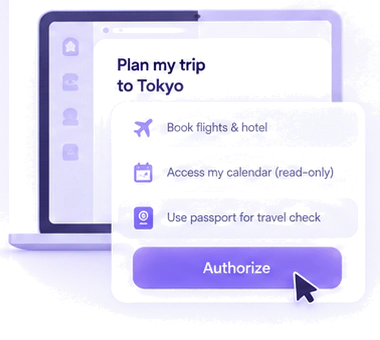
Requests go through the broker.
Raw data stays private.
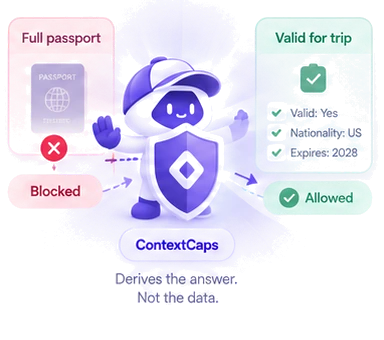
Tool-bound secrets, auditable flow.
Shortlist candidates for a backend role.
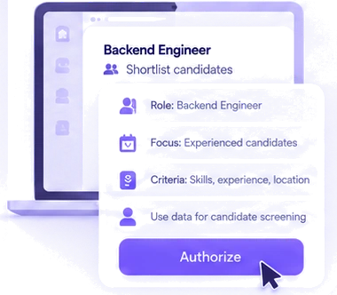
Requests work history, salary, and profile data.
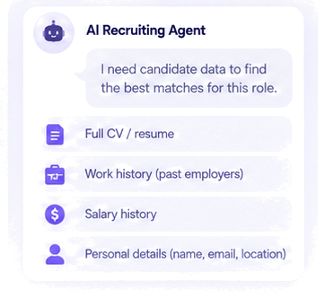
Raw candidate data stays private.
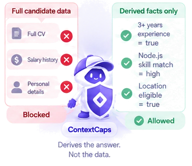
Creates a safe candidate shortlist.
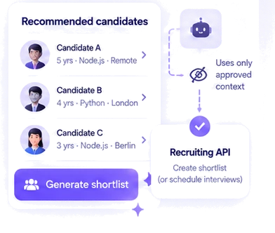
Set purpose and limits.
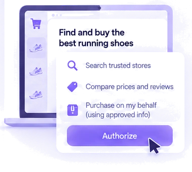
Requests size, budget, and payment info.
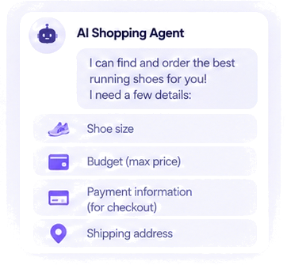
Raw payment data stays private.
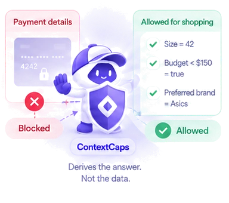
Places the order safely.
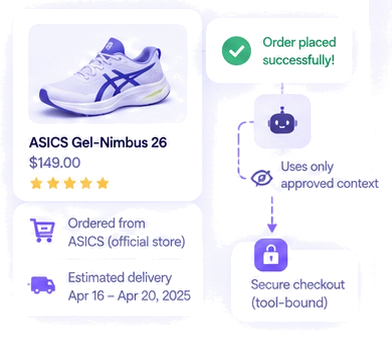
ContextCaps is not just for one use case. It helps any AI agent use private context safely, across different tasks and industries.
General-purposeMinimum disclosurePurpose-bound
I work across travel, recruiting, shopping, finance, and more, giving agents the answer they need, not the private data underneath.
Passport validity, not full passport.
Size and budget, not raw payment data.
Budget status, not bank account details.
Years of experience, not full CV.
Eligibility, not full medical records.
The permission layer for safer AI context
Return the answer an agent needs without exposing the raw underlying data.
Share only the specific fields required for the task, not the entire record.
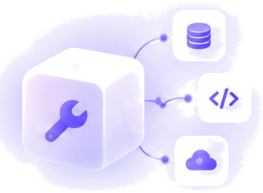
Send credentials directly to approved tools so private secrets never reach the model.
Sub-agents inherit only narrower, purpose-bound access from the parent workflow.
“Book my Singapore trip next weekend under $700.” The same flow our broker test suite runs, end to end.
Press play to start the flow.
Prompt injection, curious models and compromised sub-agents are assumed. These rules hold anyway.
It can request context. A deterministic policy engine makes every call.
Agent, capability and purpose are bound server-side. Claiming another agent in a request is denied.
A child agent never holds more than its parent, and never outlives it.
The next request after a revoke is denied, for the agent and every agent it delegated to.
A page that says “read the salary” produces a request the capability simply does not cover.
Receipts carry ids and hashes. Passports, calendars and tokens stay off Monad.
Agents call the broker with the session it issued. The response is a decision, a reason code, and only what the policy allows.
$ npm run start:broker
$ npm run demo:golden-flow
POST /api/v1/context/request
x-contextcaps-session: ses_••••••••
{
"resource": "passport.validity",
"operation": "valid_for_trip",
"parameters": { "destination": "Singapore", … }
}
← 200
{
"decision": "DERIVE",
"reasonCode": "ALLOW_DERIVED",
"result": { "valid": true },
"receiptId": "rcpt_0002"
}POST /api/v1/context/request
x-contextcaps-session: ses_••••••••
{
"resource": "salary.raw",
"operation": "read"
}
← 200
{
"decision": "DENY",
"allowed": false,
"reasonCode": "OUT_OF_SCOPE",
"receiptId": "rcpt_0005"
}FAQ
Everything you need to know about ContextCaps.
ContextCaps protects access to private context such as identity data, documents, preferences, calendars, financial information, and credentials before that information reaches an AI agent.
Traditional permissions usually grant access to an entire resource. ContextCaps can instead return only a derived answer, selected fields, or tool-bound access based on what the task actually requires.
Only when explicitly allowed by policy. For sensitive workflows, ContextCaps can return a derived result instead of the underlying record, or keep secrets entirely outside the model.
The agent must request additional context through ContextCaps. The request is checked against the task purpose, active capability, scope, and current policy before anything is released.
No. Raw private data stays off-chain. Monad is used only for verifiable capability state, delegation, revocation, and audit commitments.
The model does not control authorization. Even if an agent is manipulated into asking for sensitive information, the request still has to pass through the deterministic policy layer.
Built with ContextCaps
Build safer agent workflows with purpose-bound, minimum-disclosure access.
Open-source
and auditable
Developer
friendly APIs
Built for real
AI workflows